Uma descida só: mostra o produto, prova, mostra por dentro, mostra usando, dá mais, pede. Na primeira tela já aparecem 10 modelos do produto.
Clique em qualquer tela abaixo para ampliar.
#
Seção
Função
#
Seção
Função
1
Topo
Para quem é e qual resultado
7
Transição
Se ver com o resultado antes do preço
2
Vitrine
Mostra o produto antes de explicar
8
Oferta
Preço pequeno, ação única
3
Depoimentos
Gente como eu já usa
9
Garantia
Tira o risco
4
Tudo em um só app
Volume e “tem para todo momento”
10
Autoridade
Quem fez e por quê
5
Como funciona
Prova que é fácil, com vídeo real
11
FAQ
Responde o que ainda trava
6
Bônus
Tira as últimas objeções de uso
12
Rodapé
Dados legais
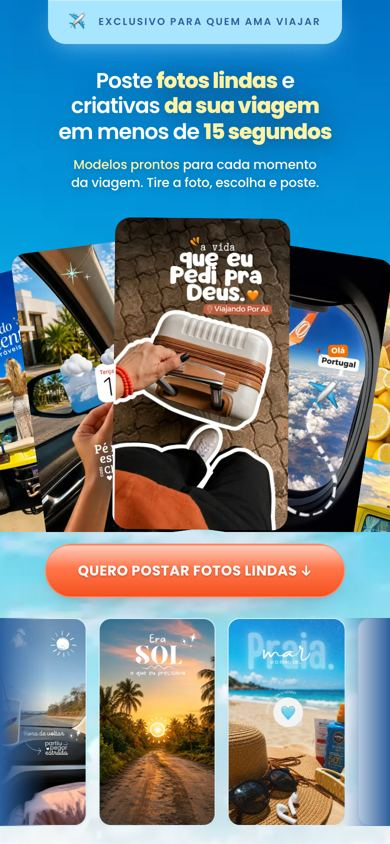
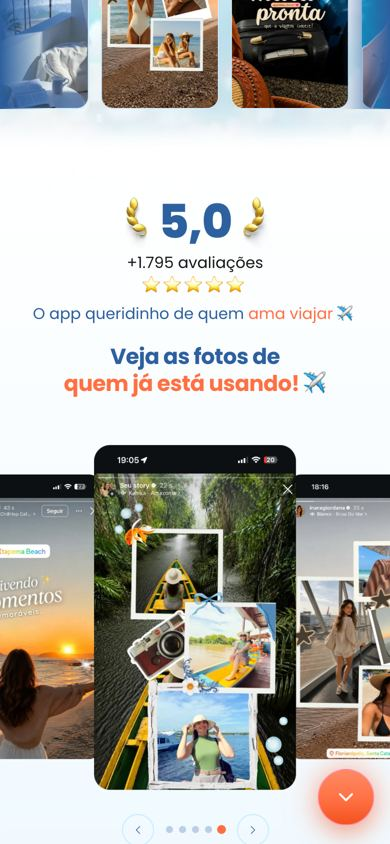
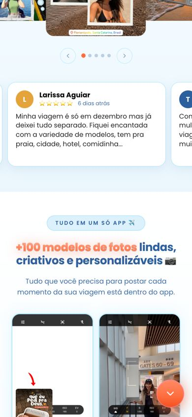
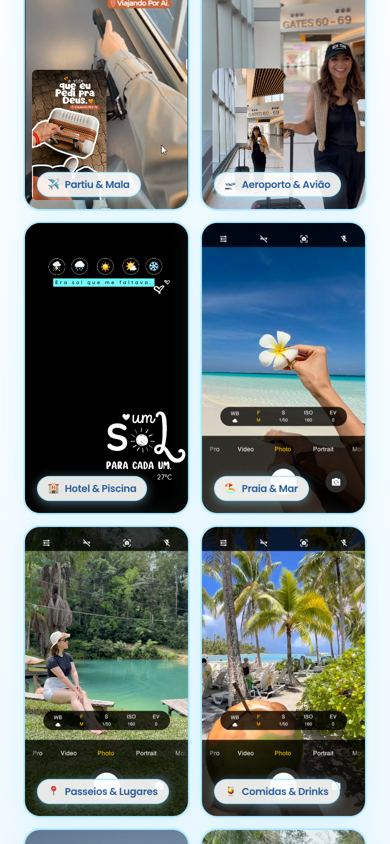
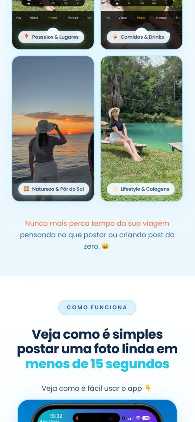
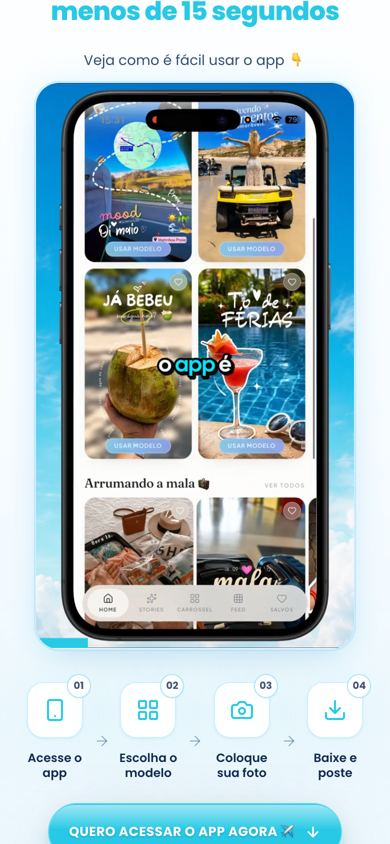
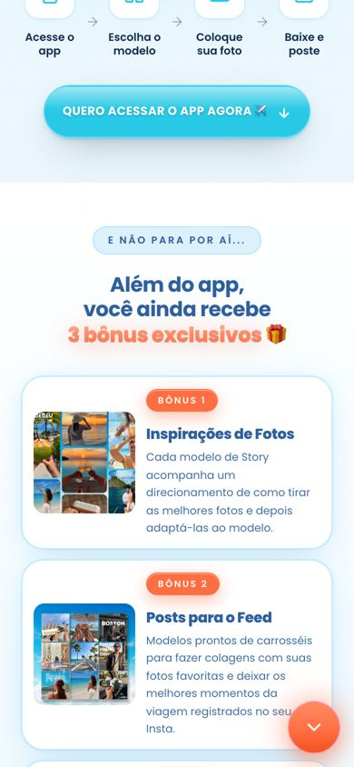
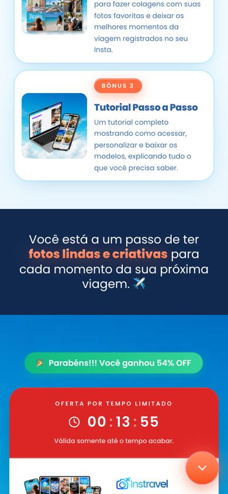
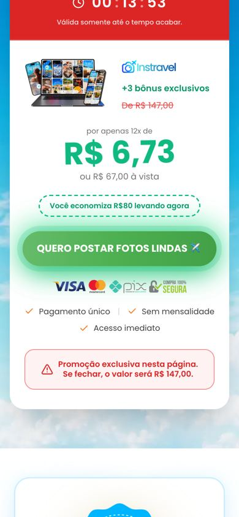
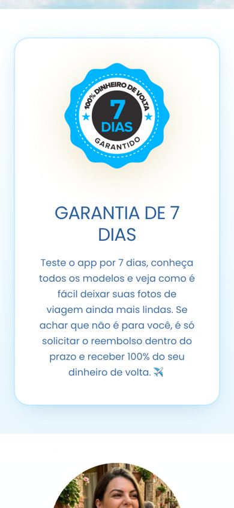
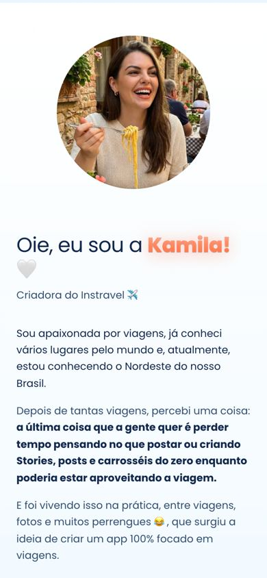
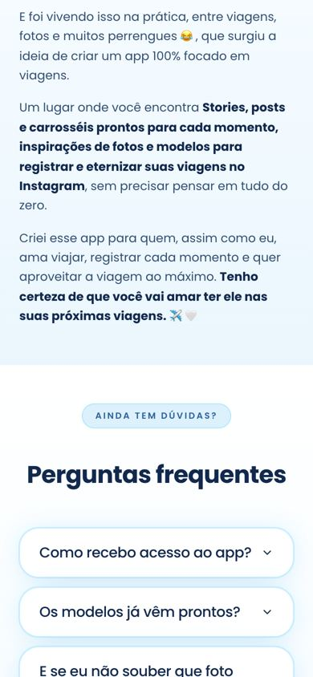
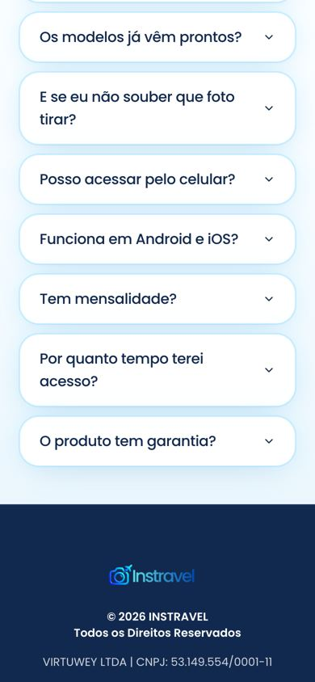
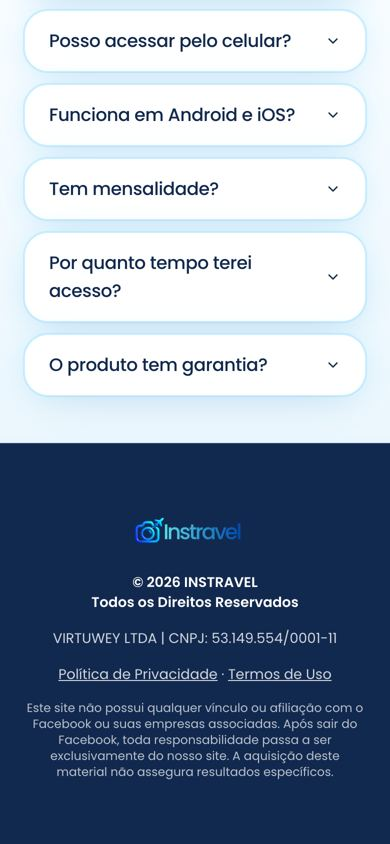
A página inteira no celular, de cima para baixo.
Playbook Low Ticket · versão 1 · 04/11/20262/57
Playbook Low TicketPágina de vendas
1 · Topo
Celular (390 px)
Copy
✈️ EXCLUSIVO PARA QUEM AMA VIAJAR Poste fotos lindas e criativas da sua viagem em menos de 15 segundos Modelos prontos para cada momento da viagem. Tire a foto, escolha e poste.
Por que funciona
A faixa nomeia uma identidade (“quem ama viajar”), não uma profissão. A pessoa se reconhece antes de ler.
O verbo da headline já é o resultado: Poste. Nada de “acesse” ou “baixe”.
Especificidade pelo tempo (15 s). O número de volume (+100) vai para depois.
O produto (“modelos prontos”) fica na sub, que termina em 3 verbos de uso.
Sem logo no topo: a marca aparece só na oferta e no rodapé.
Fórmula para adaptar
[Verbo do resultado] [resultado desejado] em [tempo curto]. [Produto pronto] para cada [momento do avatar]. [Verbo], [verbo] e [verbo].
Playbook Low Ticket · versão 1 · 04/11/20263/57
Playbook Low TicketPágina de vendas
A promessa nos 4 pilares da Kamila
1
Facilidade
“Poste” · “Modelos prontos” · “Tire a foto, escolha e poste”
2
Especificidade
“em menos de 15 segundos” (prazo). Volume (+100) fica na seção 4
3
Consumo rápido
Modelos prontos dentro de um app. Nada de curso, aula ou método
4
Desejo
“fotos lindas e criativas da sua viagem”: ser vista bonita, registrar a viagem
+
Baixo esforço
Implícito nos 15 segundos e nos 3 verbos. Sem precisar escrever “sem”
✓
Palavras proibidas
Nenhuma: sem aprenda, descubra, método, estratégia, curso
Evolução em relação às páginas antigas
50 Viral Fit (antiga)
Instravel (nova)
Faixa
🔥 Exclusivo para nutricionistas e personal trainers
✈️ Exclusivo para quem ama viajar
Headline
Acesse 50 modelos prontos de Reels virais para ganhar seguidores e vender mais consultorias online (17 palavras)
Poste fotos lindas e criativas da sua viagem em menos de 15 segundos (12 palavras)
Verbo
de acesso
de resultado
Produto
na headline
na sub
Especificidade
volume (50)
tempo (15 s)
Playbook Low Ticket · versão 1 · 04/11/20264/57
Playbook Low TicketPágina de vendas
2 · Vitrine e 3 · Depoimentos
Nota, título e carrossel de Stories de clientes
Vitrine (logo abaixo da headline)
Carrossel 3D em leque com 10 modelos, passando sozinho a cada 1 s.
Faixa rolante com mais 10 capas. Prova de produto antes da prova social.
Depoimentos
5,0 com ramos dourados · +1.795 avaliações · ⭐⭐⭐⭐⭐ · “O app queridinho de quem ama viajar”.
Título fala de fotos, não de opiniões: “Veja as fotos de quem já está usando!”.
Carrossel 3D simétrico com prints de Stories das clientes: o do meio de frente, os outros saindo iguais para a esquerda e para a direita.
Trilho de 15 comentários em cartão (inicial colorida, nome, estrelas, tempo), passando a cada 3,5 s.
Regras da prova social (Paulo, 04/11)
Nota pode vir das avaliações da marca como um todo.
Comentário em texto (sem foto/@) a partir de retorno real: Google, direct, WhatsApp.
Prints de uso sempre: Stories, carrossel, Instagram, WhatsApp.
Não escrever depoimento do zero.
Playbook Low Ticket · versão 1 · 04/11/20265/57
Playbook Low TicketPágina de vendas
Depoimentos: por que cada um existe
Os 15 comentários são uma matriz de objeções: cada um responde uma dúvida ou abre um público. Use como roteiro para pedir depoimentos aos compradores.
Quem
Objeção ou ideia
Quem
Objeção ou ideia
Juliana
Não sei tirar foto → perguntaram quem editou
Vanessa
Não sei montar story → é só trocar as fotos
Camila
Não tenho viagem marcada → usei no fim de semana
Aline
Vai ficar igual ao de todo mundo → fica com a minha cara
Rafaela
Prova da promessa: 40 min → 15 s
Fernanda
Comprei no impulso e não me arrependi
Bruna
Postei todo dia, cara profissional
Marina
Vergonha das fotos → ganhei confiança
Patrícia
Valor: melhor investimento do ano
Débora
Ocasião especial (lua de mel) + rapidez
Larissa
Variedade: praia, cidade, hotel, comidinha
Gustavo
Sem paciência pra editar · viagem a trabalho
Thiago
Abre o público masculino
Isabela
Indicação + post com mais curtidas do ano
Sophia
Ainda não viajei → usei com fotos antigas
Também variam: destinos reconhecíveis (Porto de Galinhas, Gramado, Maceió, Búzios, Chile), datas espaçadas (3 dias a 2 meses) e um ou dois homens.
Playbook Low Ticket · versão 1 · 04/11/20266/57
Playbook Low TicketPágina de vendas
4 · Tudo em um só app
8 categorias em vídeo, 2 colunas no celular
Copy
TUDO EM UM SÓ APP ✈️ +100 modelos de fotos lindas, criativos e personalizáveis 📷 Tudo que você precisa para postar cada momento da sua viagem está dentro do app.
O que tem
8 vídeos de tela, mudos e em loop, um por momento da viagem: Partiu & Mala · Aeroporto & Avião · Hotel & Piscina · Praia & Mar · Passeios & Lugares · Comidas & Drinks · Natureza & Pôr do Sol · Lifestyle & Colagens.
Fecho com a dor: “Nunca mais perca tempo da sua viagem pensando no que postar ou criando post do zero. 😩”
A ideia que mais vale copiar
Organizar o produto pelos momentos da vida do avatar, não por tipo de arquivo. A pessoa pensa “estou no aeroporto”, não “preciso de um story”.
Playbook Low Ticket · versão 1 · 04/11/20267/57
Playbook Low TicketPágina de vendas
5 · Como funciona
Vídeo vertical de tela
Copy
COMO FUNCIONA Veja como é simples postar uma foto linda em menos de 15 segundos Veja como é fácil usar o app 👇
4 passos de até 3 palavras
01 Acesse o app→02 Escolha o modelo→03 Coloque sua foto→04 Baixe e poste
Por que assim
O título repete a promessa da headline. A seção existe para provar o “15 segundos”.
Vídeo é gravação de tela real (não animação): mostra o produto de verdade.
4 passos porque o uso tem 4. Use o número real, sempre curto.
No celular: título, vídeo, ícones, botão. No computador: vídeo à direita.
Botão ciano “QUERO ACESSAR O APP AGORA ✈️ ↓” desce para os bônus.
Playbook Low Ticket · versão 1 · 04/11/20268/57
Playbook Low TicketPágina de vendas
O vídeo de tela: estrutura
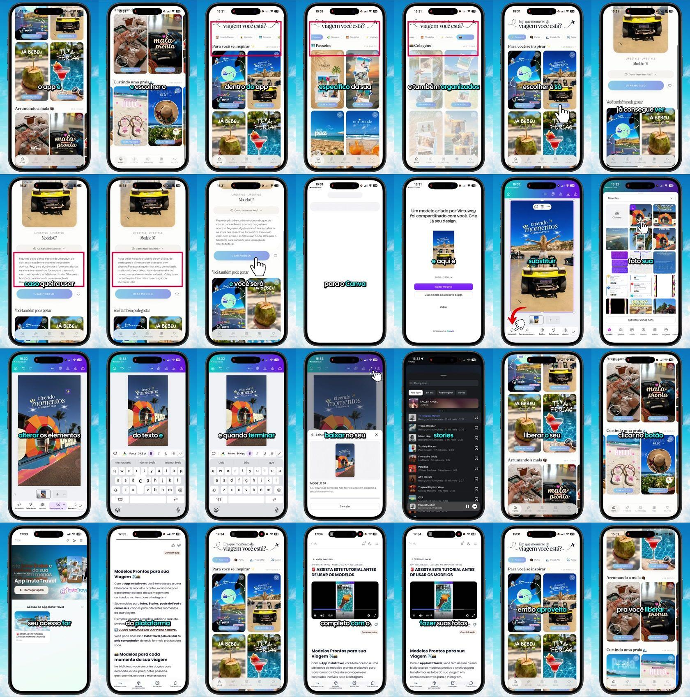
28 quadros do vídeo (70 s, 9:16)
Bloco
Tempo
O que fala e mostra
1 Facilidade
0-5 s
“É só entrar aqui e escolher o modelo.” Já dentro do app
2 Organização
5-12 s
Momentos e categorias, com retângulo vermelho
3 Escolha
12-21 s
Abre o modelo e mostra a inspiração de foto (bônus 1)
4 Personalizar
21-40 s
Vai ao Canva, troca a foto, muda texto e cor
5 Resultado
40-46 s
Baixa e posta no Story
6 Fecho
46 s
“Viu como é simples?”
7 CTA
47-70 s
Botão aqui embaixo · e-mail com link · tutorial (bônus 3) · botão de novo
Edição
Tela do celular em moldura de iPhone sobre o fundo do tema. Sem rosto.
Legenda palavra por palavra, branca com palavra-chave em ciano.
[0-5 s] E para usar o [produto] é muito simples: é só [ação 1] e escolher [o item].
[5-12 s] Dentro do [produto] você encontra [itens] para cada [momento do avatar], organizados por [categoria].
[12-21 s] Depois de escolher, é só clicar e você já vê [diferencial / bônus 1].
[21-40 s] Aí é só [ação 2] e [ação 3]. Com poucos cliques você [personaliza].
[40-46 s] Quando terminar, é só [ação final] e [resultado].
[46 s] Viu como é simples?
[47-70 s] Para liberar seu acesso, é só clicar no botão aqui embaixo.
Você recebe [como chega] e ainda [bônus 3].
Então aproveita e clica no botão aqui embaixo.
Quando usar cada vídeo
Vídeo
Quando
Gravação de tela (este)
Produto já existe e tem interface: app, área de membros, Canva, planilha. Dá mais confiança
Animação de 3 passos (lt-video-passos)
Produto sem interface boa para mostrar, ou para anúncio
O vídeo faz duas coisas
Vende a facilidade (mostra o uso).
Responde “como eu recebo?” (e-mail, link, tutorial) antes do FAQ.
Playbook Low Ticket · versão 1 · 04/11/202610/57
Playbook Low TicketPágina de vendas
6 · Bônus: pela jornada de uso
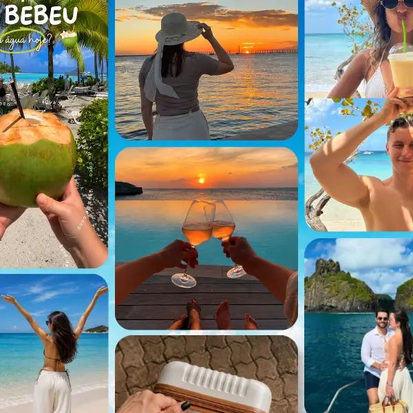
Bônus 1 · Inspirações de Fotos Antes: “e se eu não souber que foto tirar?”
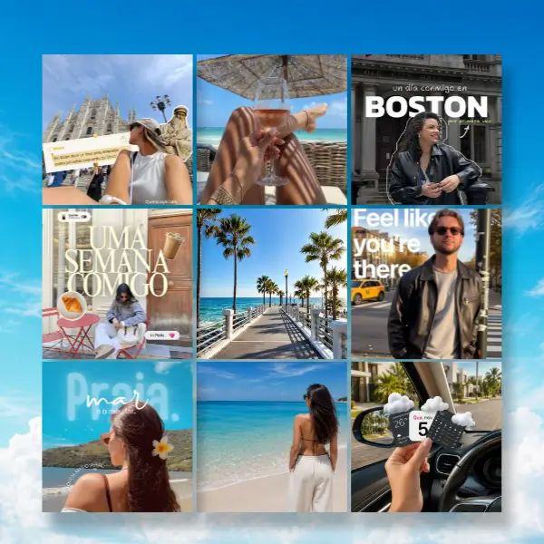
Bônus 2 · Posts para o Feed Depois: “e se eu quiser postar no feed?”
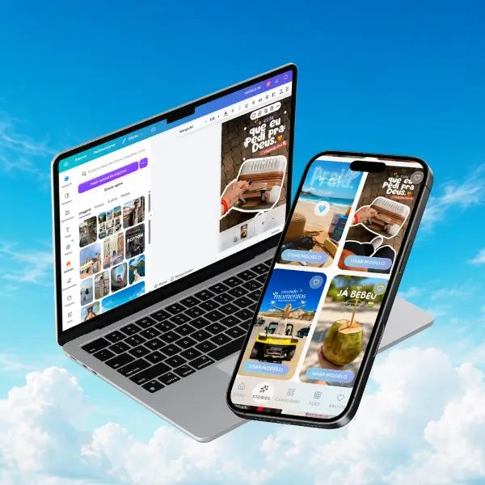
Bônus 3 · Tutorial Passo a Passo Durante: “e se eu não souber mexer?”
Por que esses três
Cada bônus responde uma pergunta de um momento diferente do uso: antes, durante e depois.
O Bônus 1 é a objeção mais forte e aparece de novo no FAQ, com a mesma resposta.
Nomes concretos, consumo rápido. Nada de “super bônus imensurável”.
Copy e layout
Etiqueta “E NÃO PARA POR AÍ...” · título “Além do app, você ainda recebe 3 bônus exclusivos 🎁”.
Celular: imagem de 112 px à esquerda e texto à direita (3 bônus em uma tela).
Computador: 3 colunas, texto em cima, imagem embaixo.
Botão flutuante de 5 s leva à oferta.
Playbook Low Ticket · versão 1 · 04/11/202611/57
Playbook Low TicketPágina de vendas
7 · Transição e 8 · Oferta
Cartão da oferta no celular
Transição (faixa azul-marinho)
Você está a um passo de ter fotos lindas e criativas para cada momento da sua próxima viagem. ✈️
É o “Imagine...” resumido em uma frase. A faixa escura avisa: agora vem o preço.
Oferta, na ordem
🎉 Parabéns!!! Você ganhou 54% OFF (estoura com confete: recompensa antes do preço).
Cabeçalho vermelho: Oferta por tempo limitado · cronômetro 15 min · Válida somente até o tempo acabar.
Mockup + logo + “+3 bônus exclusivos” + De R$ 147.
por apenas 12x de R$ 6,73 (gigante, dançando) · ou R$ 67 à vista · Você economiza R$ 80.
Botão verde: QUERO POSTAR FOTOS LINDAS ✈️ (o mesmo texto do topo).
Bandeiras · Pagamento único | Sem mensalidade | Acesso imediato · alerta “Se fechar, o valor será R$ 147”.
Preço
Âncora única e plausível (2,2x). Sem lista “Recapitulando”. R$ 67 é o preço depois de validar (tabela da Kamila: R$ 37 → R$ 67).
Playbook Low Ticket · versão 1 · 04/11/202612/57
Playbook Low TicketPágina de vendas
9 · Garantia e 10 · Autoridade
Garantia
Autoridade
Garantia
Selo 7 dias · “Teste o app por 7 dias, conheça todos os modelos e veja como é fácil...”
Saiu o “Se apenas 1 X gerar 1 Y, o investimento já se paga”: serve para nicho profissional. Em consumo, a garantia fala de experimentar.
Autoridade em 5 parágrafos
#
O quê
Instravel
1
Quem sou, ligada ao nicho
Apaixonada por viagens, conhecendo o Nordeste
2
O que percebi (a dor, em negrito)
Perder tempo pensando no que postar em vez de aproveitar
3
Como surgiu
Entre viagens, fotos e muitos perrengues 😂
4
O que é (em negrito)
Stories, posts e carrosséis prontos + inspirações
5
Para quem é + certeza
“Tenho certeza de que você vai amar”
Autoridade por vivência (ela é o avatar), não por currículo. Em nicho profissional, “Não é teoria” e anos de mercado continuam valendo.
Playbook Low Ticket · versão 1 · 04/11/202613/57
Playbook Low TicketPágina de vendas
11 · Perguntas frequentes
Pergunta
Objeção que mata
Como recebo acesso ao app?
Vou receber mesmo? Como?
Os modelos já vêm prontos?
Vou ter trabalho?
E se eu não souber que foto tirar?
A mais forte (repete o Bônus 1)
Posso acessar pelo celular?
Preciso de computador?
Funciona em Android e iOS?
Técnica, com humor: “não ocupa espaço... você vai precisar dele para as fotos 😂”
Tem mensalidade?
Medo de cobrança recorrente
Por quanto tempo terei acesso?
1 ano: a informação “ruim” fica aqui, dita de forma neutra
A página prova a mesma promessa seis vezes, de seis jeitos. Nenhum é “confie em mim”.
1
Produto na tela
Vitrine 3D e faixa rolante. Prova “é bonito” sem dizer nada.
2
Uso real
Prints de Stories de clientes. “Fica bonito com foto de gente comum.”
3
Volume organizado
8 categorias em vídeo. “Tem para todo momento.”
4
Demonstração
Vídeo de tela de 70 s. Prova o “15 segundos”.
5
Vivência
A criadora passou pelo mesmo problema.
6
Risco zero
Garantia de 7 dias.
Antes de escrever, liste como provar a promessa em cada um dos 6. Em produto digital, 1, 3 e 4 sempre dá para fazer, mesmo sem nenhum cliente. A página mostra, mas não entrega o produto.
Playbook Low Ticket · versão 1 · 04/11/202615/57
Playbook Low TicketPágina de vendas
Design: o tema do nicho vira o design
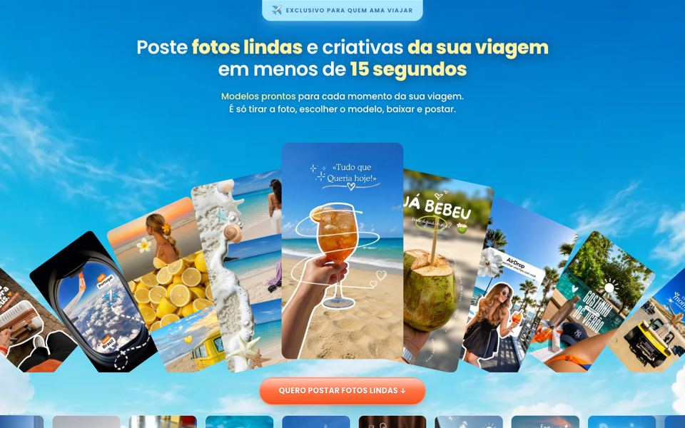
Topo no computador: céu, avião, coral e limão
Cores por papel
Céu (foto)Topo e oferta
LeituraSeções
MarinhoTransição e rodapé
TextoNunca preto
LimãoDestaque sobre foto
CoralDestaque sobre claro
CianoBotão do meio
VerdeSó o de compra
VermelhoUrgência
Azul-bebêFaixa, bordas
Para adaptar
Escolha a imagem-mundo do nicho (cozinha, academia, igreja, escritório): ela é o fundo do topo, da oferta e do checkout. Emoji do nicho em todo título. Divisória com a textura do tema (aqui, nuvens).
Playbook Low Ticket · versão 1 · 04/11/202616/57
Playbook Low TicketPágina de vendas
Design: tipografia, espaços e celular
Uma fonte só: Poppins 400 a 800
Elemento
Celular
Computador
Headline
~21 px (5,5 vw), peso 600
30 a 40 px
Sub
~13 px, peso 500
15 a 19 px
Título de seção
~22 px, peso 700
28 a 40 px
Etiqueta
11 px, caixa alta, espaçada
igual
Texto
14 a 15 px
15 a 16 px
Comentário
13,5 px
igual
Parcela
48 px
60 px
Pergunta FAQ
18 px
igual
Espaços e formas
Seção: 48 px (celular) e 64 px (computador) em cima e embaixo; 24 px nas laterais.
Oferta: coluna estreita (448 px) até no computador.
Botão: pílula, caixa alta, reflexo de vidro na metade de cima.
Celular primeiro
Quebras de linha escolhidas à mão, uma versão para celular e outra para computador. Nunca sobra palavra solta.
Mesmo texto nos dois (regra da Vissia). Só muda quebra, tamanho e ordem.
Abre rápido: seções carregam ao chegar perto, vídeos só a 300 px, imagens em 2 larguras.
Playbook Low Ticket · versão 1 · 04/11/202617/57
Playbook Low TicketIdentidade visual
A estrutura é fixa, a marca ocupa os lugares
Cada cor, peso e tamanho da página tem uma função. Trocar de especialista é trocar quem ocupa cada função, nunca a função. Por isso qualquer marca cabe nesta página sem quebrar a metodologia.
1
Hierarquia
O que é grande, grosso, fino e pequeno. Fixa: vem da metodologia.
2
Destaques
2 ou 3 trechos por título, peso 800 + cor. A cor muda conforme o fundo.
3
Cores com significado
A marca pinta a conversa. Verde e vermelho pintam o dinheiro.
4
Preço
A parcela é o maior número da página depois da headline.
5
Botões
Quente da marca para descer, verde para pagar.
6
Mundo do nicho
Uma imagem do universo do avatar no topo, na oferta, nos bônus e no checkout.
Processo completo na página “Encaixar a identidade de qualquer especialista”. Texto detalhado: playbook-pagina-lt.md, seção 6A.
Playbook Low Ticket · versão 1 · 04/11/202618/57
Playbook Low TicketIdentidade visual
Hierarquia de texto: grosso, fino, grande, pequeno
✈️ EXCLUSIVO PARA QUEM AMA VIAJAR
Poste fotos lindas e criativas da sua viagem em menos de 15 segundos
Modelos prontos para cada momento da viagem.
QUERO POSTAR FOTOS LINDAS ↓
E NÃO PARA POR AÍ...
Além do app, você ainda recebe 3 bônus exclusivos 🎁
Oie, eu sou a Kamila! 🤍
GARANTIA DE 7 DIAS
Depois de tantas viagens, percebi uma coisa: a última coisa que a gente quer é perder tempo pensando no que postar.
Réplica com as mesmas fontes, pesos e cores da página.
Nível
Peso
Por quê
Headline
600, destaques 800
O olho lê primeiro só os destaques: resultado, objeto, tempo
Sub
500, menor
Explica, não compete
Título de venda
700, destaque 800
Seções que vendem: grosso
Título de conversa
400 fino, nome/número 800
Tom de pessoa falando; o contraste fino + grosso aponta o nome ou o número
Etiqueta
600, caixa alta, 11 px
Dá para escanear a página só pelas etiquetas
Texto corrido
400, 14-15 px
Negrito só na frase-chave
Regras de destaque
2 ou 3 trechos por título: resultado, público/objeto, número/tempo. Nunca a frase inteira.
Destaque = peso 800 + cor. Sem itálico, sem sublinhado.
Sobre foto: cor clara e quente (limão). Sobre claro: cor quente forte (coral). Na seção de uso: a cor do botão dela (ciano).
Um emoji do nicho fecha o título.
Playbook Low Ticket · versão 1 · 04/11/202619/57
Playbook Low TicketIdentidade visual
Cores com significado
Da marca (muda a cada especialista)
Mundo do nichoTopo, oferta, bônus, checkout
EscuraTexto e títulos (nunca preto)
Quente / primáriaDestaques no claro, botões de descer
Destaque sobre fotoHeadline e sub
SecundáriaSeção de uso
Clara da secundáriaFaixa, etiquetas, bordas
Fundo de leituraSeções
Mais escuraTransição e rodapé
Fixas (metodologia, não mudam)
Verde: dinheiro e ganhoParabéns, +3 bônus, parcela, economia, compra
Vermelho: perda e urgênciaCronômetro, preço riscado, alerta
Laranja: checksPagamento único, sem mensalidade
A marca pinta a conversa. Verde e vermelho pintam o dinheiro. Verde = o que a pessoa ganha. Vermelho = o que ela perde. É assim que o cérebro lê preço em qualquer nicho.
No gerador (pagina.json)
Campo
Papel
primaria
Quente da marca
destaque
Destaque sobre foto
acento
Secundária
escura
Texto e pausa
fundo
Fundo de leitura
sucesso
Verde (fixo)
alerta
Vermelho (fixo)
laranja
Checks
Playbook Low Ticket · versão 1 · 04/11/202620/57
Playbook Low TicketIdentidade visual
Anatomia do preço
🎉 Parabéns!!! Você ganhou 54% OFF
OFERTA POR TEMPO LIMITADO⏱ 00 : 14 : 59Válida somente até o tempo acabar.
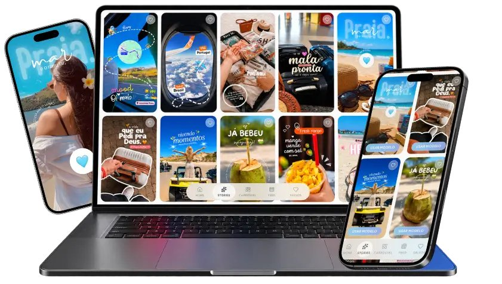
Instravel
+3 bônus exclusivos
De R$ 147,00
por apenas 12x de
R$ 6,73
ou R$ 67,00 à vista
Você economiza R$80 levando agora
QUERO POSTAR FOTOS LINDAS ✈️
✓ Pagamento único✓ Sem mensalidade✓ Acesso imediato
⚠ Promoção exclusiva nesta página. Se fechar, o valor será R$ 147,00.
Elemento
Tamanho e peso
Cor
Função
Parabéns
14 px, 600
Verde (pílula)
Recompensa antes do preço
Faixa do tempo
10 px caixa alta + 24-30 px
Vermelho
Urgência
+3 bônus
14-16 px, 600
Verde
Ganho
De R$ 147
14 px, riscado
Vermelho
O que não vai pagar
por apenas 12x de
12 px
Cinza
Passagem, quase some
R$ 6,73
48 / 60 px, 700
Verde
Maior elemento do cartão, dançando
à vista
14 px
Cinza
Honesto, sem destaque
Economia
12 px, 600
Verde, borda tracejada
Ganho em forma de cupom
Botão
16-18 px, 700
Verde, largura toda
A única ação
Checks e alerta
13 px
Laranja / vermelho
Tira medo / lembra a perda
A parcela é o maior número da página depois da headline. A âncora é pequena e riscada. O à vista aparece, mas pequeno.
Imagem do bônus sobre o mundo do nicho: os três parecem da mesma família.
Cartão branco, canto 24 px, borda fina na clara da marca, sombra puxada para a escura.
Divisória entre seções com a textura do nicho (nuvens, farinha, folhas, luz).
Playbook Low Ticket · versão 1 · 04/11/202622/57
Playbook Low TicketIdentidade visual
Encaixar a identidade de qualquer especialista
Pegue a identidade aprovada (/identidade ou Playbook Visual do cliente). Sem ela, rode /identidade antes. O Instravel é estrutura, não identidade.
Preencha os 8 papéis da marca (página “Cores com significado”). Faltou cor? Derive: clara da secundária para linhas, escuríssima da primária para texto e pausa.
Escolha a imagem-mundo do nicho e a textura da divisória.
Fonte: uma sem serifa com pesos 400 a 800 (Poppins, Plus Jakarta Sans, Montserrat, DM Sans). Serifada da marca só no nome da especialista.
Mantenha fixos: escala de tamanhos, verde do dinheiro, vermelho da urgência, 2 ou 3 destaques por título.
Escolha o emoji assinatura do nicho.
Confira contraste em 390 px: destaque sobre foto legível, texto nunca preto, verde legível no branco.
Registre no pagina.json (primaria, destaque, acento, escura, fundo; sucesso e alerta fixos).
Exemplo de encaixe
Papel
Viagem
Confeitaria
Fé
Mundo do nicho
Céu
Bancada de mármore
Céu ao amanhecer
Escura
Azul
Marrom chocolate
Azul-marinho
Quente
Coral
Rosa framboesa
Dourado
Destaque sobre foto
Limão
Creme
Branco quente
Secundária
Ciano
Verde-menta
Azul-céu
Verde / vermelho
Fixos
Fixos
Fixos
Os exemplos de confeitaria e fé mostram só o encaixe das cores. Não são ofertas aprovadas.
Playbook Low Ticket · versão 1 · 04/11/202623/57
Playbook Low TicketIdentidade visual
Mesma estrutura, outra identidade
O mesmo topo com três identidades. Mudam o mundo do nicho, a cor quente, o destaque e o emoji. Não mudam o tamanho, o peso, o lugar dos destaques e a forma do botão.
✈️ EXCLUSIVO PARA QUEM AMA VIAJAR
Poste fotos lindas e criativas da sua viagem em menos de 15 segundos
Modelos prontos para cada momento da viagem.
QUERO POSTAR FOTOS LINDAS ↓
🧁 EXCLUSIVO PARA QUEM VENDE DOCES
Venda bolos e doces no WhatsApp com fotos de vitrine em 10 minutos
Modelos prontos para cada tipo de doce.
QUERO VENDER MAIS DOCES ↓
🙏 EXCLUSIVO PARA MULHERES DE FÉ
Poste stories cheios de fétodos os dias em menos de 15 segundos
Stories prontos com versículos para cada dia.
QUERO POSTAR COM FÉ ↓
Viagem é o Instravel. Confeitaria e fé são exemplos de encaixe (frases ilustrativas, não ofertas aprovadas).
Playbook Low Ticket · versão 1 · 04/11/202624/57
Playbook Low TicketIdentidade visual
Réplica fiel: o checklist (pontos do Paulo)
Quando a página segue uma referência, o design dela é a regra. Antes de mostrar: comparar_referencia.py (lado a lado, celular e computador) e este checklist.
☐Mesma fonte, pesos e tamanhos em cada nível
☐Quebras de linha iguais, versão celular e computador
☐Destaques com o mesmo efeito (limão com sombra, degradê com brilho, coral simples)
☐Etiquetas em pílula azul-clara
☐Sem linhas que a referência não tem (topo esmaece em branco)
☐Carrossel 3D sem sombra nem borda, simétrico, largura toda, movimento em mola
☐Cartões inteiros sem corte reto e sem espaço extra até o botão
☐Botão do topo do tamanho do texto, com espaço certo, sem contagem de 5 s
☐Nota 5,0 com ramos dourados
☐Depoimentos em pilha de profundidade, infinita dos dois lados
☐Os 8 vídeos de categoria, grade 2/4
☐Como funciona: etiqueta no alto, ícones de linha em caixas grandes
☐Bônus: cartões estreitos, título 24 px, texto fino
☐Oferta: mockup à esquerda, logo e bônus à direita
☐Parcela dançando, cupom tracejado, bandeiras em imagem
☐Alerta vermelho-claro com borda (não verde)
☐Cronômetro zerado: nada muda
☐Garantia em fundo claro, título fino, selo do produto
☐Autoridade com foto redonda ao lado
☐FAQ com etiqueta, rodapé com logo
Playbook Low Ticket · versão 1 · 04/11/202625/57
Playbook Low TicketPágina de vendas
Animações: tudo que se mexe
Onde
O que acontece
Tempo
Todas as seções
Título e blocos sobem 20 px e aparecem, uma vez só
0,5 s · cascata 0,05 a 0,15 s
Vitrine
Carrossel 3D em leque, os de lado girados 8 a 12° e menores
passa a cada 1 s, dá para arrastar
Vitrine
Faixa de capas correndo, bordas esmaecidas
40 s por volta
Botão do topo
Travado com “5s, 4s...” e barra enchendo, depois libera
5 s
Botões coral e ciano
Sobem 10 px e voltam; brilho passa por dentro
2,2 s
Comentários
Trilho passando, pausa no mouse
3,5 s
Botão flutuante
Só durante depoimentos e bônus; conta 5 s e vira seta
2,2 s
Categorias
8 vídeos mudos em loop
contínuo
Como funciona
Ícones um por um, depois as setas
0,15 s entre eles
Oferta
Pílula “Parabéns” estoura e brilha; 26 confetes caem
0,65 s · 1,8 s
Oferta
Parcela dança (cresce 12%, gira 2°)
1,6 s
Oferta
Botão verde pulsa com halo verde
1,8 s
FAQ
Abre e fecha, uma de cada vez
0,2 s
O botão travado 5 s da página dela foi tirado no nosso modelo (decisão do Paulo, 04/11).
Playbook Low Ticket · versão 1 · 04/11/202626/57
Playbook Low TicketPágina de vendas
Botões (CTAs)
#
Texto
Onde
Leva para
Cor
1
QUERO POSTAR FOTOS LINDAS ↓
Abaixo da vitrine
Depoimentos
Coral, travado 5 s
2
(seta flutuante)
Durante os depoimentos
Categorias
Coral, 5 s
3
QUERO ACESSAR O APP AGORA ✈️ ↓
Depois dos passos
Bônus
Ciano
4
(seta flutuante)
Durante os bônus
Oferta
Coral, 5 s
5
QUERO POSTAR FOTOS LINDAS ✈️
Cartão da oferta
Checkout
Verde
1
Só um vai ao checkout
Todos os outros descem a página. Ninguém pula a prova.
2
QUERO + resultado
1ª pessoa, com o desejo da headline. O primeiro e o último são iguais.
3
Cor por função
Coral desce, verde paga. A pessoa aprende sem perceber.
Playbook Low Ticket · versão 1 · 04/11/202627/57
Playbook Low TicketPágina de vendas
Decisões por oferta (todas as páginas são validadas)
A 13S é a mesma em todas as páginas da Kamila. Onde elas diferem, é uma decisão conforme a oferta, não erro. Escolha uma opção em cada linha.
Ponto
Opção A
Opção B
Quando
Impacto visual
Vitrine 3D do produto (Instravel)
Pessoa + celulares (50 Viral Fit) ou mockup
A: produto bonito de ver. B: produto é o resultado da pessoa
Prova social
Prints + nota + comentários
Prints de uso · demonstração · passo a passo cedo + autoridade
Conforme a prova que existe hoje
Ordem 3 e 4
Entregáveis antes do passo a passo
Passo a passo antes
A: vende pela variedade. B: dúvida é “consigo usar?”
Vídeo
Gravação de tela com narração
Animação de 3 passos
A: produto com interface. B: sem interface ou anúncio
Entregáveis
Categorias em vídeo
Galeria com cadeado + “+N”
A: muitos usos. B: biblioteca única
Resultado imaginado
Frase de transição
Bloco “Imagine...”
A: página curta. B: transformação grande
Ancoragem
Âncora única
“Recapitulando” com total
A: produto simples. B: muitos itens de valor
Garantia
Tom de experimentar
+ “Se 1 X gerar 1 Y...”
A: consumo. B: nicho profissional
Autoridade
Por vivência
Por experiência (“Não é teoria”)
Conforme a história real
Suporte
Sem WhatsApp
Com “Ficou com alguma dúvida?”
Decisão do Paulo por oferta
Urgência
Cronômetro por visitante
Data real
Os dois valem
Playbook Low Ticket · versão 1 · 04/11/202628/57
Playbook Low TicketPágina de vendas
O que cada página ensina
Página
O que ela tem de melhor
Instravel
Acabamento visual, vitrine no topo, categorias por momento, vídeo de tela, bônus pela jornada, cor por função do botão, checkout com 2 bumps + combo
50 Viral Fit
Faixa por profissão, galeria com cadeado, “Recapitulando”, garantia com “Se 1 X gerar 1 Y”
50 Carrossel Fit
Demonstração com exemplos antes da prova, comentários com @
App Stories Bíblicos
“Como é por dentro” para app (base do código do Instravel)
Ativa FIT
Funciona sem depoimento nenhum
Pilares da promessa
Todas passam nos 4 pilares + baixo esforço. A forma de headline do Instravel (verbo de resultado + tempo, produto na sub) pode ser usada em qualquer oferta.
O playbook é da metodologia, com todas as páginas como referência. O Instravel é o exemplo principal porque é o mais bem acabado, não porque as outras estejam erradas.
Playbook Low Ticket · versão 1 · 04/11/202629/57
Playbook Low TicketPágina de vendas
Velocidade: nota 95 e abrir em até 2 segundos
A regra
95 ou mais no PageSpeed do Google, no celular e no computador. Abrir em até 2 s. Sem perder qualidade de imagem. Página lenta faz a pessoa fechar antes de carregar, o pixel não registra a visita e o connect rate cai.
Métrica
Meta
Nota
95+
LCP (maior elemento da 1ª tela)
até 2,0 s
FCP (primeira coisa)
até 1,2 s
TBT (celular travado)
até 150 ms
CLS (página pulando)
até 0,05
Peso da 1ª tela
~300 KB
Onde estamos (04/11, medição local)
Página
Celular
PC
Instravel (React)
36
60
Anúncio Pronto
35 a 62
95
Meu Roteiro (nosso gerador)
78
92
A Kamila é referência de oferta, copy e design, não de técnica.
Como chegar lá sem perder qualidade
HTML puro, sem React/Lovable.
Primeira tela leve: imagem do topo com prioridade alta; o resto carrega ao chegar perto.
Imagens WebP/AVIF qualidade 80-85 em 2 ou 3 tamanhos (360, 560, 828 px), com largura e altura declaradas.
Uma fonte, 3-4 pesos, arquivo próprio, headline carregada primeiro.
Animações em CSS, pausadas fora da tela.
Pixel, UTMify e Clarity carregam depois da página aparecer.
Vídeos só perto de aparecer, com capa leve; até ~1,5 MB.
CSS dentro da página.
Vercel: servidor perto, compressão, cache.
Medir antes de publicar: medir_velocidade.py (3 rodadas) ou pagespeed.web.dev.
Playbook Low Ticket · versão 1 · 04/11/202630/57
Playbook Low TicketPágina de vendas
Ficha para adaptar a uma oferta nova
1Faixa: EXCLUSIVO PARA QUEM ___
2Promessa: [verbo do resultado] ___ em [tempo] ___
3Sub: [produto pronto] para cada [momento]. [verbo], [verbo] e [verbo]
4Vitrine: 10 itens do produto (teaser se for PDF)
5Prova real disponível: prints / textos de retorno / nada ainda
6Momentos do avatar: 6 a 8 categorias com emoji e vídeo de tela
7Número de volume: +___ [itens]
8Dor do fecho: “Nunca mais ___”
9Passos de uso: 3 ou 4, até 3 palavras
10Vídeo de tela: roteiro em branco
113 bônus: antes ___ / durante ___ / depois ___
12Transição: “Você está a um passo de ___ para ___.”
13Preço: à vista, parcelas, âncora única (~2,5x), economia
14Urgência: cronômetro 15 min (ao zerar, nada muda) ou data real
15Garantia no tom do produto
16Autoridade: quem sou, o que percebi, como surgiu, o que é, para quem é
17FAQ: 6 a 8, repetindo a objeção do bônus 1
18Imagem-mundo do nicho, emoji, cor de destaque
19Botão: QUERO [resultado da headline]
Playbook Low Ticket · versão 1 · 04/11/202631/57
Playbook Low TicketCheckout
O checkout em uma tela
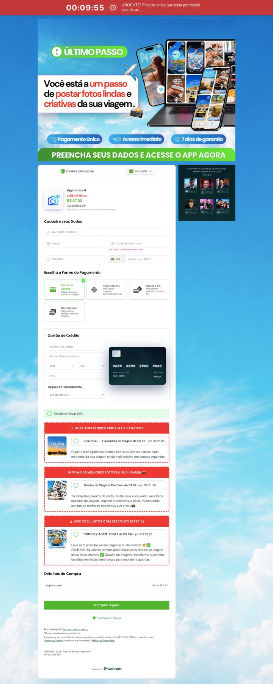
Checkout do Instravel (OnProfit)
De cima para baixo
Elemento
Função
Faixa vermelha: cronômetro 10 min + “URGENTE!”
Pressa (a oferta é daquela visita)
Banner “ÚLTIMO PASSO”
Lembra a promessa e diz o que fazer
Produto: de R$ 147 por R$ 67 ou 12x R$ 6,73
Confirma o que viu na página
Formulário mínimo + confirmar e-mail
Evita acesso perdido
Cartão, Pix, Cartão + Pix, 2 cartões
Ninguém fica sem forma de pagar
12x já selecionado
O número pequeno primeiro
Selecionar todas (0/3) + 2 bumps + combo
Aumentar o pedido
Plataforma segura + fotos (lateral)
Prova da plataforma
Fundo: o mesmo céu da página
Não parece que saiu do lugar
Continuidade é a regra número 1: mesmo fundo, mockup, frase, preço e garantias da página. Diferença na hora do cartão gera desconfiança.
Playbook Low Ticket · versão 1 · 04/11/202632/57
Playbook Low TicketCheckout
O banner do checkout
1024 x 736
Bloco
Por quê
Fundo do mundo do nicho (céu)
Continuidade com a página
Pílula verde “ÚLTIMO PASSO”
Falta pouco
“Você está a um passo de postar fotos lindas e criativas da sua viagem.”
A promessa pela 3ª vez, idêntica
Avião e câmera 3D nos cantos do cartão
Emoji do nicho dá vida sem poluir
Notebook + 2 celulares com o app real
É isso que chega em segundos
Pagamento único · Acesso imediato · 7 dias de garantia
Os 3 medos da hora de pagar
Barra verde: PREENCHA SEUS DADOS E ACESSE O APP AGORA
Instrução, não venda
Mudou em relação ao modelo antigo (lt-banner-checkout)
Fundo cinza → fundo do nicho.
Selos pretos com neon → selos na cor da marca.
“Finalize seus dados” → “Preencha seus dados e acesse o app agora”.
Celulares → notebook + celulares.
Playbook Low Ticket · versão 1 · 04/11/202633/57
Playbook Low TicketCheckout
Bônus x order bump
Bônus
Order bump
Serve para
Tirar uma objeção da compra
Atender uma vontade a mais de quem já decidiu
Responde
“E se eu não conseguir?” (medo)
“E se ficar ainda melhor?” (desejo)
Sem ele a promessa se cumpre?
Não, para parte do público
Sim, igual
Onde aparece
Na página, antes do preço
No checkout, depois da decisão
Preço
Grátis (sobe o valor percebido)
Pago e barato (sobe o valor do pedido)
Mede
Conversão da página
Ticket médio
Teste de duas perguntas
1. Se eu tirar isso, a promessa ainda acontece? Não → bônus. Sim → pode ser bump. 2. Responde a um medo ou a uma vontade? Medo → bônus. Vontade → bump.
No Instravel
Inspirações de Fotos = bônus: sem ela, quem não sabe fotografar não posta foto linda.
Tutorial = bônus: medo de não saber mexer.
Figurinhas = bump: o Story já fica lindo sem elas.
Quadro para imprimir = bump: nada a ver com postar, é vontade.
Bump não vai como bônus porque, depois de 3 bônus, mais um não aumenta a venda e o produto perde a chance de cobrar. E não vai na página porque a página vende uma coisa só.
Playbook Low Ticket · versão 1 · 04/11/202634/57
Playbook Low TicketCheckout
Os 3 bumps e a ordem
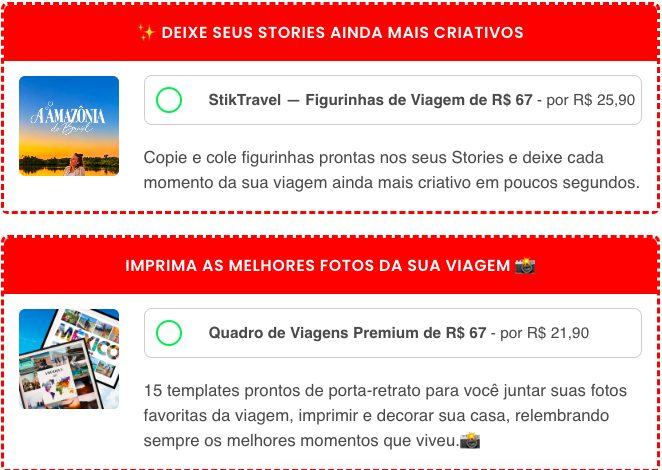
Bumps 1 e 2
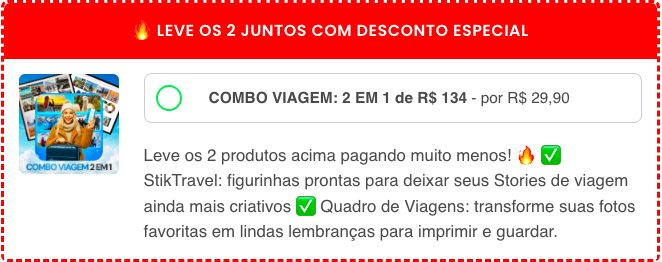
Combo
#
Cabeçalho (benefício)
Produto
Preço
1
✨ DEIXE SEUS STORIES AINDA MAIS CRIATIVOS
StikTravel: Figurinhas
de R$ 67 por R$ 25,90
2
IMPRIMA AS MELHORES FOTOS DA SUA VIAGEM 📸
Quadro de Viagens Premium
de R$ 67 por R$ 21,90
3
🔥 LEVE OS 2 JUNTOS COM DESCONTO ESPECIAL
Combo 2 em 1
de R$ 134 por R$ 29,90
Por que essa ordem
1º o mais próximo do produto (o mesmo Story) e o mais caro: é o sim mais fácil.
2º outro uso (a parede de casa) e mais barato: segunda porta para quem recusou.
Combo por último: só faz sentido depois de ver os dois preços (47,80 → 29,90).
Como escrever
Cabeçalho = verbo + benefício + emoji. Nunca o nome do produto.
Linha da caixa = nome curto + “de R$ X por R$ Y” (X = preço do principal).
Descrição = o que é, com número + resultado emocional, com os pilares da promessa.
Playbook Low Ticket · versão 1 · 04/11/202635/57
Playbook Low TicketCheckout
Como criar os bumps e conferir o checkout
Passo a passo dos bumps
Liste o que o cliente vai querer depois de usar: no mesmo uso (“ainda mais...”) e em outro uso da mesma vida.
Passe cada ideia no teste de duas perguntas. Fica só o que for vontade.
Escolha 2: o primeiro grudado no uso principal (mais caro), o segundo em outro uso (mais barato).
Combo dos 2 por pouco mais que o mais caro.
Âncora de cada bump = preço do principal. Âncora do combo = soma.
Consumo rápido e pronto, igual ao principal.
Anote a taxa de cada bump: o que vende bem vira produto próprio ou upsell.
Duas tabelas de preço válidas
Modelo
Bumps
Combo
Kamila padrão
3 de R$ 15,90 a 17,90
3 em 1 a R$ 35,90
Instravel
2 de R$ 21,90 e 25,90
2 em 1 a R$ 29,90
Checklist do checkout
☐ Fundo do checkout = mundo da página
☐ Banner: ÚLTIMO PASSO + “Você está a um passo de [promessa]” + mockup + 3 garantias + barra verde
☐ Mesmo de/por e parcela da página
☐ Parcelamento máximo já selecionado
☐ 2 bumps + combo, cabeçalho de benefício, na ordem certa
☐ Imagem quadrada de cada bump
☐ Cronômetro: por visitante (ao zerar, nada muda) ou data real
☐ Compra testada no celular
Ainda não visto: upsell, downsell e e-mail de acesso. Completar quando tiver prints.
Playbook Low Ticket · versão 1 · 04/11/202636/57
Playbook Low TicketPrompts das imagens
Mapa das imagens
#
Imagem
Onde
IA?
1
Fundo do mundo do nicho
Topo, oferta, checkout
Sim
2
Modelos da vitrine
Carrossel e faixa
Não: exportar do produto
3
Vídeos das categorias
Tudo em um só app
Não: gravar a tela
4
Mockup da oferta
Oferta e banner
Sim, com prints reais
5
Bônus 1, coleção
Bônus
Sim
6
Bônus 2, grade do feed
Bônus
Sim, com prints
7
Bônus 3, tutorial
Bônus
Sim, com prints
8
Selo de garantia
Garantia
Sim
9
Ramos dourados
Nota
Sim
10
Banner do checkout
Checkout
Sim
11
Bumps e combo
Checkout
Sim
12
Ícone do produto
Checkout
Sim
13
Foto da especialista
Autoridade
Não: foto real
14
Capa do vídeo
Como funciona
Print do vídeo
Como usar
ChatGPT (imagem) ou Gemini / Nano Banana. Um prompt por conversa, com os anexos pedidos.
Prompt em inglês; texto da arte em português, entre aspas.
Troque tudo que está entre [colchetes]. Os valores de exemplo são do Instravel.
Tela do produto é sempre print real anexado. A IA monta o cenário, não inventa o produto.
Gere primeiro o fundo do nicho e anexe nas outras peças.
Clique em “Copiar” em cima de cada prompt.
Playbook Low Ticket · versão 1 · 04/11/202637/57
Playbook Low TicketPrompts das imagens
Prompts: 1. Fundo do mundo do nicho · 4. Mockup da oferta
1. Fundo do mundo do nicho
Wide background photograph for a sales page, [16:9, 1920x1080 | 9:19.5 vertical, 828x1792 for mobile]. [Clear bright blue sky seen from above the clouds, soft white cumulus clouds along the bottom edge, a few thin wispy clouds at the top, natural daylight, airy and optimistic]. The upper two thirds must be calm and fairly uniform so white headline text stays readable on top of it. No people, no objects, no text, no logos. Photorealistic, high resolution, slightly saturated, clean.
4. Mockup da oferta
Anexar: 1 print da tela do produto no computador (grade de modelos), 2 prints do celular (tela do app e um modelo aberto).
Product mockup on a transparent background (PNG), 1200x700. Composition: an open modern silver laptop in the center-right, seen slightly from the front and a bit from above; its screen shows the attached desktop screenshot, sharp and legible, filling the screen. Behind it on the left, a modern smartphone slightly rotated to the left (about -8 degrees) showing the attached phone screenshot 1. In front on the right, overlapping the laptop's corner, a second smartphone slightly rotated to the right (about +6 degrees) showing the attached phone screenshot 2. Thin black phone bezels, realistic glass reflections, soft natural shadows under the devices. Do not change, redraw or invent anything on the screens: use the attached screenshots exactly. No text, no logos besides what is on the screenshots, no background.
Playbook Low Ticket · versão 1 · 04/11/202638/57
Playbook Low TicketPrompts das imagens
Prompts: 5. Bônus 1: coleção de exemplos · 6. Bônus 2: grade do feed
5. Bônus 1: coleção de exemplos (Instravel: Inspirações de Fotos)
Square image 600x600. Background: [the attached sky background, bright blue with soft clouds]. On top, a dense mosaic of [7] rounded-corner photo tiles of different sizes, arranged like a masonry collage that bleeds off the edges, with thin gaps showing the background. The photos show [aspirational travel moments: a hand holding a fresh coconut on a tropical beach, a woman in a white hat watching the sunset over the sea, two wine glasses toasting on a wooden pier at sunset, a woman with open arms on a turquoise beach, a couple on a boat near green cliffs, a man drinking a smoothie by palm trees, a suitcase on cobblestones]. Natural, warm, Instagram-style travel photography, diverse people, nobody looking at the camera. No text, no logos.
6. Bônus 2: grade do feed (Instravel: Posts para o Feed)
Anexar: 9 posts reais do produto (ou 4 a 6 e pedir para repetir com variação).
Square image 600x600. Background: [the attached sky background]. In the center, a 3x3 grid of square social media posts with thin white gaps, like an Instagram profile grid, slightly larger than the frame on the sides, with a soft drop shadow under the grid. Use the attached post images exactly, one per cell, without redrawing their text or design. If fewer than 9 are attached, repeat them in a balanced order. No extra text, no logos, no phone frame.
Playbook Low Ticket · versão 1 · 04/11/202639/57
Playbook Low TicketPrompts das imagens
Prompts: 7. Bônus 3: tutorial · 8. Selo de garantia
Anexar: print do editor (Canva) com um modelo aberto no computador e print do app no celular.
Square image 600x600. Background: [the attached sky background, bright blue sky with fluffy white clouds at the bottom]. A modern silver laptop floats in the left half, tilted about 15 degrees, its screen showing the attached desktop screenshot (an editor with a template open), sharp and legible. In front of it on the right, a smartphone floats tilted the opposite way, showing the attached phone screenshot. Soft shadows, gentle depth of field on the clouds, clean and bright. Use the screenshots exactly, do not redraw them. No text, no logos.
8. Selo de garantia
Round guarantee badge on a transparent background (PNG), 1024x1024, flat vector style. Outer shape: a wavy scalloped circle in [vivid sky blue #12B5F5]. Inside: a white ring with a thin dashed [blue] line, then a dark charcoal (#2B2B2B) center circle. Curved text along the top of the white ring, bold black uppercase: "100% DINHEIRO DE VOLTA"; along the bottom: "GARANTIDO"; two small [blue] stars on the left and right of the ring. In the center circle, a huge bold [blue] number "7" and below it the bold [blue] word "DIAS". Exact Brazilian Portuguese spelling, clean and crisp, no other text.
Playbook Low Ticket · versão 1 · 04/11/202640/57
Playbook Low TicketPrompts das imagens
Prompts: 9. Ramos dourados da nota · 10. Banner do checkout
9. Ramos dourados da nota (só com nota real)
Two separate golden laurel branches on a transparent background (PNG), each about 200x400, one curving to the left and one mirrored to the right, like the sides of an award wreath. Glossy 3D gold with soft highlights, a few round leaves, elegant and minimal. No text, no stars, nothing in the middle.
10. Banner do checkout (variante "mundo do nicho", modelo Instravel)
Anexar: o fundo do nicho (1), o mockup da oferta (4), o banner de referência.
Horizontal checkout page header banner, 1024x736, Brazilian infoproduct style, bright and modern. I am attaching: (1) a background photo, (2) a product mockup with transparent background, (3) a reference banner. Use the reference only for layout, spacing and hierarchy. Do not copy its text or images.
Background: the attached background photo filling the whole banner [bright blue sky with soft clouds].
Top left: a green rounded pill (#22C55E) with a white circle containing a green exclamation mark and the bold white uppercase text "ÚLTIMO PASSO".
Left, below it: a large white card with a soft shadow, attached to the left edge (square on the left, rounded on the right). Inside, in a bold modern geometric sans-serif (like Poppins), very dark grey, left-aligned, 3 lines:
"Você está a [um passo]" / "de [postar fotos lindas] e" / "[criativas] da sua viagem."
The words in brackets are in [vivid orange #F4511E]; the rest dark grey. Write exactly like this, without the brackets, with correct Brazilian Portuguese accents.
Two small 3D emoji-style objects overlap the card's corners: [a small white airplane at the top right corner and a vintage camera with a sparkle at the bottom right corner].
Right side: the attached product mockup, large, slightly overlapping the card, used exactly as provided.
Lower area: three rounded pills in a single row, [royal blue #1E63D6 to #2F80ED gradient] with a thin light outline, each with a white outline icon on the left and bold white text: [card icon] "Pagamento único" / [envelope icon with speed lines] "Acesso imediato" / [shield with check icon] "7 dias de garantia".
Bottom: a full-width bright green strip (#16A34A to #4ADE80 gradient) with bold white uppercase centered text: "PREENCHA SEUS DADOS E ACESSE [O APP] AGORA".
Style: high contrast, generous spacing, very large legible text that still reads when the banner is shrunk to 375 px wide. No price, no testimonials, no other text besides the quoted texts.
Playbook Low Ticket · versão 1 · 04/11/202641/57
Playbook Low TicketPrompts das imagens
Prompts: Bump 1, mesmo uso · Bump 2, outro uso
Bump 1, mesmo uso (Instravel: figurinhas para Stories)
Anexar: 1 Story real do produto com figurinhas aplicadas, se existir.
Square image 400x400. A vertical phone story (9:16) in the center, slightly rotated, showing [a golden sunset over a river with a small person silhouette], decorated with bold playful stickers: [a handwritten title sticker "Amazônia", a small airplane, a location pin, a sun]. Around the phone, 4 or 5 loose stickers floating with white die-cut borders and soft shadows. Bright, saturated, fun. No other text.
Bump 2, outro uso (Instravel: quadro para imprimir)
Anexar: as imagens do bump 1 e do bump 2.
Square image 400x400. Several printed travel photo collages in thin black and white frames, overlapping at slight angles on a bright blue background: a world map collage, a "MÉXICO" photo collage, a beach collage. Realistic paper texture, soft shadows, cheerful travel colors. Only the word "MÉXICO" as text, nothing else.
Playbook Low Ticket · versão 1 · 04/11/202642/57
Playbook Low TicketPrompts das imagens
Prompts: Combo · 12. Ícone do produto
Combo
Square image 400x400. Bright blue background. In the back, the two attached product images side by side, slightly rotated. In front, centered, [a smiling young woman in a yellow jacket pulling a blue suitcase], cut out with a white outline like a sticker. At the bottom, a white rounded label with bold blue uppercase text "COMBO VIAGEM 2 EM 1". No other text.
12. Ícone do produto
App icon, 512x512, rounded square with white background and a subtle soft shadow. In the center, [a bold blue outline camera with a small airplane flying out of the lens, leaving a curved dotted trail], [gradient from #1E63D6 to #28C9E6]. Flat, modern, simple shapes that read at 48 px. No text.
Playbook Low Ticket · versão 1 · 04/11/202643/57
Playbook Low TicketCriativos em vídeo
O que já existia e o que este playbook acrescenta
Versão 1 · 04/11/2026. Complemento do que já existe, sem repetir:
- Método e roteiro (6 etapas, ganchos, CTA, takes, PDF de gravação): skill lt-criativos-video e padroes-kamilla.md · processo 0-vissia/operacao/processos/criativos-video-low-ticket.md.
- Produto: Meu Roteiro que Vende (3-produtos/meu-roteiro-que-vende/): Engenharia do Minuto e as 6 Decisões do Desconhecido.
- Padrão ouro nosso: Anúncio Pronto (1-clientes/primeiro-cnpj/5-produtos/anuncio-pronto/criativo/), formato por takes aprovado em 01/11/2026.
O que este playbook acrescenta: o lado visual dos 11 anúncios reais da Kamila, que ainda não estava registrado: os formatos de tela, as aberturas, as legendas e o cartão final, as provas que aparecem na tela e o desmonte de cada vídeo com os quadros. Serve para escrever a coluna "Na edição" e o campo "quebra" dos takes, e para a /editar-criativo.
Vídeos: 4-conhecimento/cursos-e-sistemas/Low Ticket Kamilla/Criativos/ · Quadros: playbook/img/cv-*.jpg. Nota de ritmo: ela fala cerca de 3 palavras por segundo; no nosso formato o alvo aprovado segue 120 a 150 palavras para 50 a 60 s.
Playbook Low Ticket · versão 1 · 04/11/202644/57
Playbook Low TicketCriativos em vídeo
Os 5 formatos visuais (o que se vê na tela)
Formato
Como é
Vídeos
Quando usar
A. Pessoa recortada no canto
A pessoa, recortada com contorno colorido ou tracejado, ocupa o canto de baixo (cerca de 45% da tela), na frente de um fundo que troca a cada 3 s: exemplos do produto, telas do app, posts com curtidas
50VF 271, criativos 3, 4, 5, 6, 8, 10
O padrão. Produto que dá para mostrar (modelos, app, IA)
B. Tela dividida
Em cima, um exemplo do que o produto faz (um Reels viral) com faixa vermelha de texto; embaixo, a pessoa falando
50VF 272
Quando o exemplo é o argumento ("é esse formato que viraliza")
C. Personagem em 3ª pessoa
Várias cenas de vida (almoço, sofá, rede, notebook), roupas trocadas, recorte com nome ("Esta é Kamila"), notificação de venda, legenda de 2 linhas
Criativo 7
História de transformação de alguém real
D. Cabeça falante com texto 3D
A pessoa sentada falando direto; no começo um texto grande 3D ("Low Ticket") e uma notificação; depois tela em cima e pessoa embaixo
Criativo 9
Explicação, tutorial, autoridade
E. Tela pura
Filmagem da tela do computador ou do celular mostrando o produto funcionando; termina com o resultado
Criativo 11
Produto que se prova sozinho na tela (IA, gerador)
Em todos: corte ou troca de fundo a cada 3 a 4 segundos. Nada fica parado.
Playbook Low Ticket · versão 1 · 04/11/202645/57
Playbook Low TicketCriativos em vídeo
As aberturas (quebra de padrão): 11 jeitos que ela usa
Abertura
O que acontece nos 2 primeiros segundos
Vídeo
Transição com desfoque
Um "whoosh" borrado vira a cena; a pessoa recortada já falando
50VF 271, criativos 4, 5, 6
Comendo algo
Maçã, banana, pão na mão enquanto fala (casual, gente de verdade)
50VF 271, 272
Faixa de público no topo
Cartão tipo notificação: "Exclusivo para mulheres cristãs · Assista este vídeo até o final"
Criativo 3
Objeto na mão
Copo térmico, notebook, celular colado na câmera
Criativos 3, 6, 11
Gesto no rosto
Dedo na têmpora ou na bochecha, pose de "pensa comigo"
Criativos 4, 5, 10
Entrar andando
Entra no quadro carregando o notebook
Criativo 6
Texto que se monta
Letras recortadas montando a pergunta ("Contenido listo para Instagram?")
Criativo 6
Recorte com nome
Contorno laranja grosso, estrelas e "Esta es Kamila"
Criativo 7
Recorte sobre estética do nicho
Contorno branco, bilhete de papel com a frase, adesivos de flor
Criativo 8
Texto 3D + notificação
"Low Ticket" verde neon gigante e uma notificação aparecendo
Criativo 9
Bastidor
O celular no tripé gravando, a pessoa no fundo
Criativo 10
Regra: a quebra é o que se vê; o gancho é o que se ouve; os dois juntos no segundo 0.
Playbook Low Ticket · versão 1 · 04/11/202646/57
Playbook Low TicketCriativos em vídeo
Legendas, textos e edição
Legenda (sempre, palavra por palavra):
Estilo
Como é
Vídeos
Palavra única no centro
Uma palavra por vez, branca, grossa, com contorno escuro, no meio da tela
Criativos 4, 5, 10
Palavra em caixa colorida
Uma palavra em caixa amarela ou laranja, levemente girada
Criativos 8, 9
Duas linhas com destaque
Frase curta em 2 linhas brancas, a palavra-chave colorida (rosa, amarelo, azul)
Criativo 7
Brilho
Palavra amarela com brilho
Criativo 11
O que se sobrepõe: faixa de texto do público no topo; notificação (venda, Pix, mensagem); posts com curtidas e comentários; telas de "insights"; recorte da pessoa com contorno; adesivos do nicho; seta apontando para baixo no CTA.
Cartão final: tela preta com "CLIQUE EM SAIBA MAIS" em caixa branca e setas para baixo (criativos 5, 10, 11), ou a frase com seta desenhada (criativo 6), ou a cena com moldura de câmera "REC" (criativo 7). Fica 2 a 3 s.
Ritmo de edição: troca de fundo a cada 3 a 4 s, transições com desfoque, a pessoa recortada fica fixa no canto enquanto o fundo muda. Tudo isso é o estilo da /editar-criativo.
Playbook Low Ticket · versão 1 · 04/11/202647/57
Playbook Low TicketCriativos em vídeo
Prova: o que ela usa e o que podemos usar
Prova
Exemplo
Na Vissia
Demonstração na tela
O app gerando, o clone falando, o carrossel sendo baixado
Sempre. É a prova principal
Quantidade
"Olha a quantidade de modelos", galeria passando
Sim
Metaprova
"Esse vídeo que você está vendo foi 100% feito com essa IA"
Só se for verdade e não confundir (erro já cometido: parecer que o anúncio inteiro é IA)
Prints de redes
Posts com curtidas, comentários, insights
Sim, se forem reais
Notificações de venda ou Pix
"Venta realizada", "Pix Pago Você recebeu R$ 17,90"
Sim, as nossas reais
Relato em 1ª pessoa
"As pessoas compartilham, mulheres escrevem para mim"
Sim, o que a especialista viveu
Playbook Low Ticket · versão 1 · 04/11/202648/57
Playbook Low TicketCriativos em vídeo
Vídeos desmontados (1 de 6)
50 Viral Fit 271 · Contraintuitivo · formato A · 49 s · 160 palavras
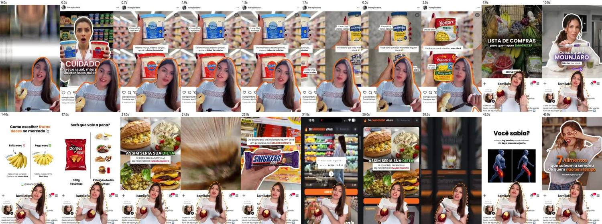
Abertura: desfoque vira a cena; recortada comendo pão no mercado, por cima de um carrossel "CUIDADO" de comparação de produtos.
Gancho: "Não faz sentido, mas é esse formato aqui de carrossel orgânico que tá fazendo os nutricionistas viralizar."
Dor/explicação: por que o formato viraliza (identificação com marcas do mercado, nativo do Instagram).
Solução + prova: "Aqui ó, nessa biblioteca você tem 50 modelos prontos" com a biblioteca na tela; "E o melhor: cada modelo já vem com a legenda".
CTA: duplo, "libera o seu acesso".
Por que funciona: o próprio produto é o gancho (o carrossel que aparece é um dos modelos). O fundo troca a cada 3 s mostrando 10 carrosséis diferentes: prova de quantidade sem dizer nada.
50 Viral Fit 272 · Diagnóstico · formato B · 34 s · 107 palavras
Abertura: tela dividida: em cima, um Reels viral de outro nutricionista com a faixa vermelha "NUTRICIONISTAS NÃO SABEM FAZER EDIÇÃO DE REELS VIRAL"; embaixo, ela comendo banana.
Gancho: "A maioria dos nutricionistas que não viralizam é porque não sabem fazer essas edições aqui."
Solução: "Aqui, nessa biblioteca, estão os 50 Reels mais viralizados do seu nicho"; "com apenas um clique você gera o roteiro"; "É só trocar o fundo, baixar e postar."
Por que funciona: mostra o resultado (o Reels viral) antes de falar do produto. Curto e direto. (34 s: no limite; para nós, mínimo 35 s.)
Playbook Low Ticket · versão 1 · 04/11/202649/57
Playbook Low TicketCriativos em vídeo
Vídeos desmontados (2 de 6)
Criativo 3 · Propósito · formato A · 53 s · 146 palavras
Abertura: cartão de notificação no topo "Exclusivo para mulheres cristãs · Assista este vídeo até o final", copo térmico na mão, corações desenhados.
Gancho: "A palavra de Deus tem poder e pode chegar a muito mais pessoas através das suas histórias."
Dor: "Durante muito tempo eu quis começar a publicar, mas não sabia fazer stories bonitos."
Solução: passo a passo na tela do app (escolhe o estilo, a foto, o versículo, a mensagem).
Prova: relato (as pessoas reagem, compartilham, escrevem) + "Olha esses modelos, um mais lindo que o outro".
CTA: "Se você sente que suas redes podem ser usadas para um propósito maior..." + ativar o acesso.
Por que funciona: vende identidade e propósito, não ferramenta. Legenda palavra por palavra e fundos estéticos do nicho.
Criativo 4 · Antes e depois · formato A · 50 s · 168 palavras
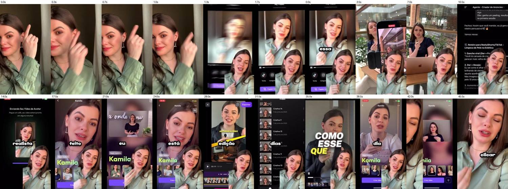
Abertura: dedo na têmpora, close; desfoque; recortada na frente da tela do app.
Gancho: "Depois que eu comecei a usar essa IA para gerar os meus anúncios, nunca mais perdi tempo e dinheiro com cenário, roteiro, gravação ou edição."
Prova: metaprova ("esse vídeo foi 100% feito com essa IA"), a lista de clones que ela usa, o app gerando.
Por que funciona: a dor está dentro do gancho (lista de 4 coisas chatas). A prova é o próprio vídeo.
Playbook Low Ticket · versão 1 · 04/11/202650/57
Playbook Low TicketCriativos em vídeo
Vídeos desmontados (3 de 6)
Criativo 5 · Pergunta com dor · formato A · 38 s · 113 palavras
Abertura: desfoque, gesto apontando para a têmpora, palavras únicas no centro.
Gancho: "Quer publicar conteúdo no Instagram, mas tem pavor de gravar?"
Dor: "Eu queria aparecer, mas a câmera me paralisava." Virada: "Até que eu descobri esta IA."
Fecho: cartão preto "CLIQUE EM SAIBA MAIS".
Por que funciona: dor emocional (medo da câmera) nomeada em 1 frase; solução que tira o esforço todo.
Criativo 6 · Hipótese · formato A · 55 s · 146 palavras
Abertura: entra andando com o notebook; letras recortadas montam "Conteúdo pronto para Instagram?".
Solução: "É muito simples: abre o app, clica em Ver Conteúdo e depois em Gerar"; lista do que entrega (Stories, Reels, Carrosséis, Posts); cronograma diário.
"E o melhor": funciona para qualquer nicho.
Por que funciona: demonstração longa e organizada, telas escuras do app com destaque rosa; microfone de lapela na mão (bastidor real).
Playbook Low Ticket · versão 1 · 04/11/202651/57
Playbook Low TicketCriativos em vídeo
Vídeos desmontados (4 de 6)
Criativo 7 · Terceira pessoa · formato C · 40 s · 148 palavras
Abertura: cena no balcão com o celular ("quando almoça"), depois o recorte laranja com "Esta es Kamila" e estrelas.
Gancho: "Esta é a Kamila. Ela vende todos os dias no automático."
Desenvolvimento: humor ("Irritante? Sim, mas funciona"), o "segredo" (estrutura de oferta validada), o que entrega, preço comparado a uma pizza.
CTA: "antes que a Kamila tire este vídeo do ar". Pode usar (seção 7): o anúncio pode mesmo sair do ar.
Por que funciona: narrador fala dela como personagem, várias cenas de vida, legenda em 2 linhas com palavra colorida: parece conteúdo, não anúncio.
Criativo 8 · Pergunta com dor · formato A (estética do nicho) · 41 s · 132 palavras
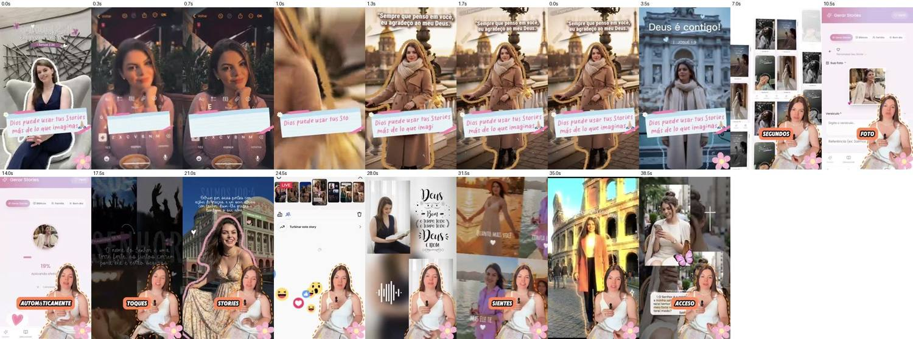
Abertura: recorte com contorno branco sobre um story estético, bilhete de papel "Deus pode usar seus Stories mais do que você imagina", adesivos de flor; teclado digitando.
Gancho: "Você deseja compartilhar a palavra de Deus, mas nunca tem tempo para preparar algo bonito?"
Solução e prova: passo a passo no app, gerando "automaticamente"; reações de Stories; "Olha esses modelos, um mais lindo que o outro".
Por que funciona: o visual inteiro está no mundo do nicho (cores, adesivos, fundos dos próprios modelos). Legenda em pílula laranja.
Playbook Low Ticket · versão 1 · 04/11/202652/57
Playbook Low TicketCriativos em vídeo
Vídeos desmontados (5 de 6)
Criativo 9 · Curiosidade · formato D · 61 s · 230 palavras
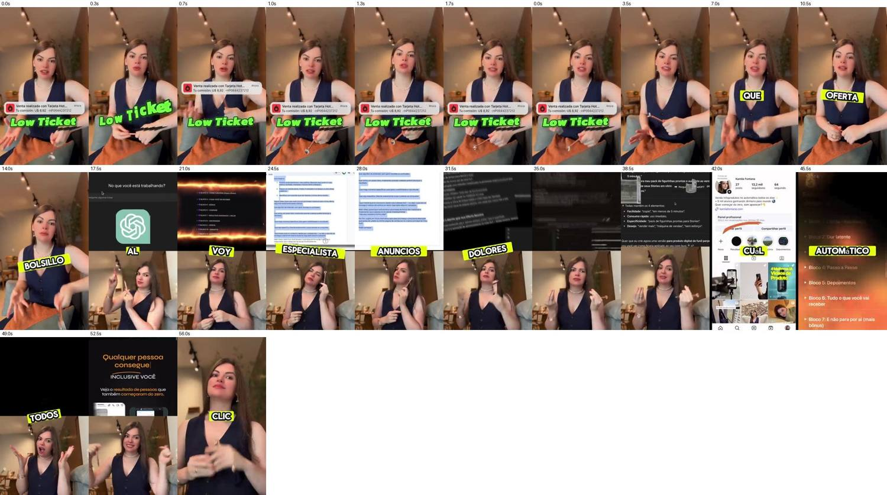
Abertura: "Low Ticket" 3D verde neon gigante e notificação de venda aparecendo.
Desenvolvimento: contra-crença ("o que vende não é o produto, é a oferta"), tutorial no ChatGPT na metade de cima, prova pelo perfil dela.
Renda: fala de valor por mês e "dinheiro no bolso". Pode usar com número real (seção 7), com uma versão sem renda de reserva.
Criativo 10 · Dor + virada · formato A · 67 s · 168 palavras
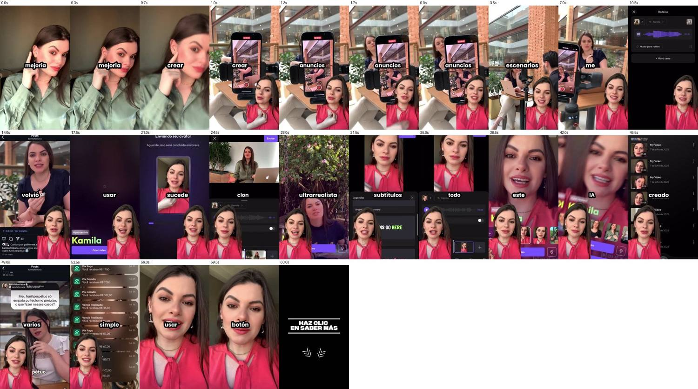
Abertura: dedo na bochecha, close; depois o bastidor (celular no tripé gravando).
Gancho/dor: "Para criar anúncios, roteiros, gravações, edições, cenários... era uma dor de cabeça total." Virada: "Até que comecei a usar esta IA."
Prova: o app clonando, a lista de vídeos criados, notificações de Pix (só reais), metaprova.
Fecho: cartão preto "CLIQUE EM SAIBA MAIS".
Por que funciona: mostra o "antes" (o trabalho de gravar) em vez de só falar dele. 67 s: acima do máximo de 1 minuto.
Playbook Low Ticket · versão 1 · 04/11/202653/57
Playbook Low TicketCriativos em vídeo
Vídeos desmontados (6 de 6)
Criativo 11 · Demonstração com número · formato E · 53 s · 144 palavras
Abertura: a tela do notebook filmada com o celular, com a avatar já aparecendo.
Gancho: "Com só uma foto, essa IA gera vídeos em menos de cinco minutos."
Solução: "É muito simples: adiciona um visual, escolhe a foto, clica em enviar... Em menos de 2 minutos o vídeo está pronto."
Prova: o resultado tocando na tela, depois a avatar falando em tela cheia.
Por que funciona: o gancho é a promessa com número e a prova chega em 15 s. Nenhuma cena com a pessoa real até o fim.
Playbook Low Ticket · versão 1 · 04/11/202654/57
Playbook Low TicketCriativos em vídeo
Como usar ao escrever os takes
Campo "quebra" do take 1: escolha uma abertura da seção 2 que dê para gravar com o que vocês têm (objeto do nicho, gesto, entrar andando, faixa de público no topo).
Coluna "Na edição": diga o formato da seção 1 (padrão: A, pessoa recortada no canto sobre as telas do produto), o estilo de legenda da seção 3 e o cartão final.
Antes de gravar: liste as telas e exemplos do produto que vão de fundo (seção 4: a prova é a demonstração).
Edição: passe para a /editar-criativo o formato, o estilo de legenda e as telas.
Playbook Low Ticket · versão 1 · 04/11/202655/57
Playbook Low TicketCriativos em vídeo
Decisões do Paulo sobre o que ela usa (04/11/2026)
Promessa de renda: pode usar, como ela usa ("vende todos os dias", "vender muito mais", valor por mês), quando o número for real (resultado da especialista ou do cliente). Cuidado prático: o Meta costuma reprovar anúncio com promessa de ganho; ter sempre uma versão do mesmo vídeo sem a frase de renda para trocar se for reprovado.
"Antes que este vídeo saia do ar": pode usar. É verdade: o anúncio pode ser pausado a qualquer momento. Escassez de oferta ("só por um momento") também, quando for o caso.
Resultados, relatos e notificações: usar os nossos, reais, do mesmo jeito que ela usa (notificação de venda, Pix, prints de mensagens, insights, relato da especialista). Pedir esse material antes de escrever o roteiro.
Metaprova ("este vídeo foi feito com IA"): só quando o produto é exatamente isso, para não confundir (erro já cometido no Anúncio Pronto).
Tempo: 35 s a 1 minuto.
Gancho: sem "curso", "aprenda", "método".
Playbook Low Ticket · versão 1 · 04/11/202656/57
Playbook Low TicketPróximos passos
Decisão sobre as skills
Recomendação
Uma esteira só (low-ticket), com todas as páginas como referência. O gerador ganha as peças novas do Instravel como opções, sem perder nenhuma das antigas.
Onde está cada coisa
playbook-pagina-lt.md: a página, completa, em texto (a IA lê este).
playbook-checkout-lt.md: checkout, banner e bumps.
prompts-imagens-lt.md: todos os prompts.
PLAYBOOK-LOW-TICKET.html: este caderno (gerado por gerar_html.py).